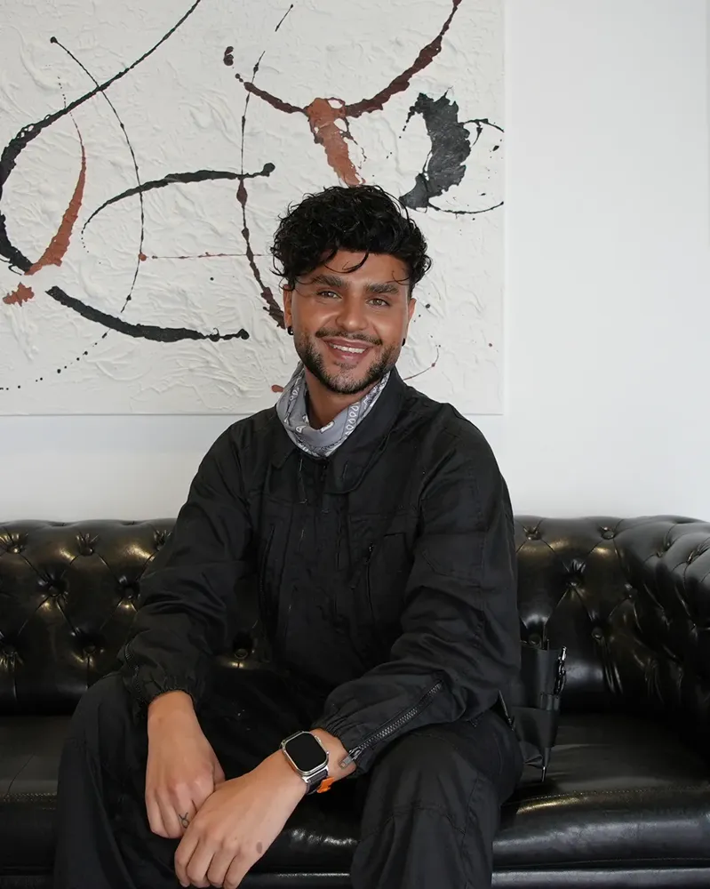

Mohamed SalehFarbe · Balayage · Extensions
Mohamed bringt über 10 Jahre Erfahrung mit. Er ist Experte für Farbveränderungen, Balayage, Extensions und präzise Haarschnitte – egal ob kurz oder lang. Seine Vergangenheit als internationaler Trainer macht ihn zum perfekten Ansprechpartner für anspruchsvolle Stylings und individuelle Looks.